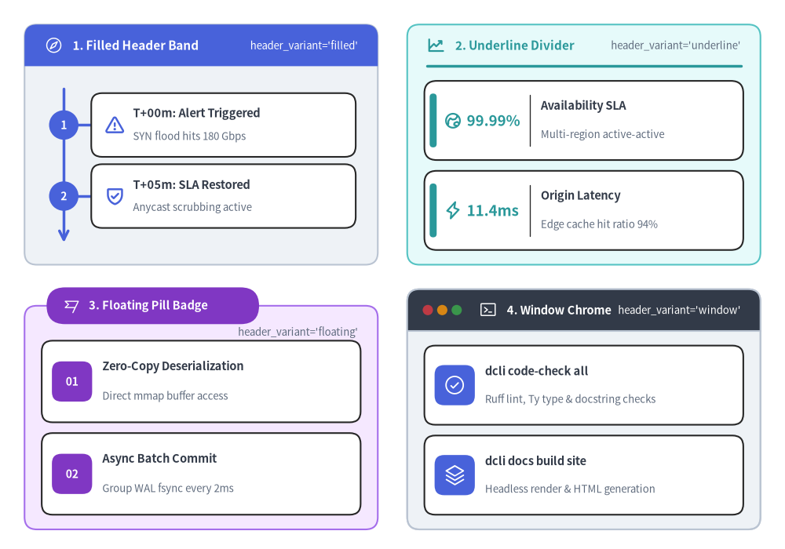
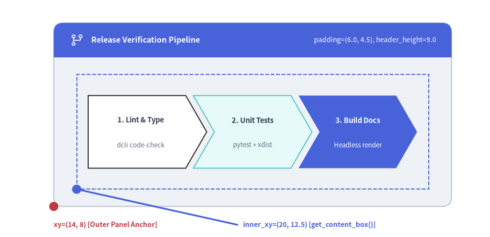
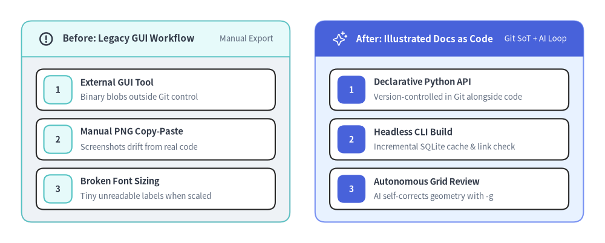

Panel
The Panel component renders titled container frames with a header band (header_variant="filled" | "underline" | "floating" | "window") and provides get_content_box(xy, width, height, padding=...) to automatically compute the inner drawable (inner_xy, inner_width, inner_height) for nesting other SmartArts, Charts, or Diagrams inside the container.
Every displayed element requires an explicit Style (style, header_style, text_style always; description_style when description is non-empty; icon_style when icon is provided; dot_styles when header_variant="window").

Source Code
from drawlib.canvas import save, setup
from drawlib.icons import phosphor
from drawlib.smartarts import CardList, KpiCards, Panel, Roadmap
from drawlib.styles import Styles
setup(width=160, height=112)
# 1. Top-Left: header_variant="filled"
p1 = Panel(
"1. Filled Header Band",
"header_variant='filled'",
style=Styles.Neutral,
header_style=Styles.PrimaryFlat,
text_style=Styles.WhiteBold.patch(text_size=11.0),
description_style=Styles.White.patch(text_size=9.5),
icon=phosphor.compass,
icon_style=Styles.White,
header_variant="filled",
header_height=8.5,
)
p1.draw((5.0, 58.0), width=72.0, height=49.0)
c1_xy, c1_w, c1_h = p1.get_content_box((5.0, 58.0), width=72.0, height=49.0, padding=(3.5, 3.0))
rm = Roadmap(
style=Styles.White,
text_style=Styles.DarkBold.patch(text_size=10.5),
description_style=Styles.Muted.patch(text_size=9.5),
spine_style=Styles.PrimaryBold,
badge_style=Styles.PrimaryFlat,
badge_text_style=Styles.WhiteBold.patch(text_size=10.0),
icon_style=Styles.PrimaryBold,
spacing=2.0,
)
rm.add("T+00m: Alert Triggered", "SYN flood hits 180 Gbps", badge_text="1", icon=phosphor.warning)
rm.add("T+05m: SLA Restored", "Anycast scrubbing active", badge_text="2", icon=phosphor.shield_check)
rm.draw(c1_xy, width=c1_w, height=c1_h)
# 2. Top-Right: header_variant="underline"
p2 = Panel(
"2. Underline Divider",
"header_variant='underline'",
style=Styles.SecondaryNeutral,
header_style=Styles.SecondaryBold,
text_style=Styles.SecondaryBold.patch(text_size=11.0),
description_style=Styles.Muted.patch(text_size=9.5),
icon=phosphor.chart_line_up,
icon_style=Styles.SecondaryBold,
header_variant="underline",
header_height=8.5,
)
p2.draw((83.0, 58.0), width=72.0, height=49.0)
c2_xy, c2_w, c2_h = p2.get_content_box((83.0, 58.0), width=72.0, height=49.0, padding=(3.5, 3.0))
kpi = KpiCards(
style=Styles.White,
metric_style=Styles.SecondaryBold.patch(text_size=13.5),
text_style=Styles.DarkBold.patch(text_size=10.5),
description_style=Styles.Muted.patch(text_size=9.5),
accent_style=Styles.SecondaryFlat,
icon_style=Styles.SecondaryBold,
metric_width_ratio=0.32,
spacing=2.2,
)
kpi.add("99.99%", "Availability SLA", "Multi-region active-active", icon=phosphor.globe_hemisphere_east)
kpi.add("11.4ms", "Origin Latency", "Edge cache hit ratio 94%", icon=phosphor.lightning)
kpi.draw(c2_xy, width=c2_w, height=c2_h)
# 3. Bottom-Left: header_variant="floating"
p3 = Panel(
"3. Floating Pill Badge",
"header_variant='floating'",
style=Styles.AccentNeutral,
header_style=Styles.AccentFlat,
text_style=Styles.WhiteBold.patch(text_size=10.5),
description_style=Styles.Muted.patch(text_size=9.5),
icon=phosphor.flag_banner,
icon_style=Styles.White,
header_variant="floating",
header_height=7.5,
)
p3.draw((5.0, 4.0), width=72.0, height=49.0)
c3_xy, c3_w, c3_h = p3.get_content_box((5.0, 4.0), width=72.0, height=49.0, padding=(3.5, 3.0))
cl3 = CardList(
style=Styles.White,
text_style=Styles.DarkBold.patch(text_size=10.5),
description_style=Styles.Muted.patch(text_size=9.5),
badge_style=Styles.AccentFlat,
badge_text_style=Styles.WhiteBold.patch(text_size=10.0),
icon_style=Styles.White,
spacing=2.2,
)
cl3.add("Zero-Copy Deserialization", "Direct mmap buffer access", badge_text="01")
cl3.add("Async Batch Commit", "Group WAL fsync every 2ms", badge_text="02")
cl3.draw(c3_xy, width=c3_w, height=c3_h)
# 4. Bottom-Right: header_variant="window"
p4 = Panel(
"4. Window Chrome",
"header_variant='window'",
style=Styles.Neutral,
header_style=Styles.DarkFlat,
text_style=Styles.WhiteBold.patch(text_size=10.5),
description_style=Styles.White.patch(text_size=9.5),
icon=phosphor.terminal_window,
icon_style=Styles.White,
dot_styles=(
Styles.DangerFlat.patch(shape_line_width=0),
Styles.WarningFlat.patch(shape_line_width=0),
Styles.SuccessFlat.patch(shape_line_width=0),
),
header_variant="window",
header_height=8.5,
header_align="left",
)
p4.draw((83.0, 4.0), width=72.0, height=49.0)
c4_xy, c4_w, c4_h = p4.get_content_box((83.0, 4.0), width=72.0, height=49.0, padding=(3.5, 3.0))
cl4 = CardList(
style=Styles.White,
text_style=Styles.DarkBold.patch(text_size=10.5),
description_style=Styles.Muted.patch(text_size=9.5),
badge_style=Styles.PrimaryFlat,
icon_style=Styles.White,
spacing=2.2,
)
cl4.add("dcli code-check all", "Ruff lint, Ty type & docstring checks", icon=phosphor.check_circle)
cl4.add("dcli docs build site", "Headless render & HTML generation", icon=phosphor.stack)
cl4.draw(c4_xy, width=c4_w, height=c4_h)
save()
1. Inner Content Box Calculation (get_content_box)
When placing another component (Roadmap, CardList, KpiCards, ChevronProcess, or BarChart) inside a Panel, call panel.get_content_box(xy, width, height, padding=(pad_x, pad_y), align=..., content_align=...) to obtain (inner_xy, inner_width, inner_height). This automatically subtracts header_height from the top and insets all four sides by padding:
align: "bottom_left" | "center" = "bottom_left": Matches thealignpassed topanel.draw(xy, width, height, align=...).content_align: "bottom_left" | "center" | None = None: Controls whether the returnedinner_xyis the"bottom_left"or"center"of the inner box. WhenNone(default), it inheritsalign—soget_content_box(..., align="center")returns the center coordinate ready forrectangle(inner_xy, ...)orinner_component.draw(inner_xy, ..., align="center").
from drawlib.canvas import save, setup
from drawlib.icons import phosphor
from drawlib.lines import line
from drawlib.shapes import circle, rectangle
from drawlib.smartarts import ChevronProcess, Panel
from drawlib.styles import Styles
from drawlib.text import text
setup(width=128, height=62)
panel_xy = (14.0, 8.0)
panel_w, panel_h = 104.0, 48.0
panel = Panel(
"Release Verification Pipeline",
"padding=(6.0, 4.5), header_height=9.0",
style=Styles.Neutral,
header_style=Styles.PrimaryFlat,
text_style=Styles.WhiteBold.patch(text_size=11.5),
description_style=Styles.White.patch(text_size=10.0),
icon=phosphor.git_branch,
icon_style=Styles.White,
header_variant="filled",
header_height=9.0,
)
panel.draw(panel_xy, width=panel_w, height=panel_h)
# Compute inner drawable box
inner_xy, inner_w, inner_h = panel.get_content_box(
panel_xy,
width=panel_w,
height=panel_h,
padding=(6.0, 4.5),
)
# Visualize the computed inner bounding box with a dashed outline
rectangle(
(inner_xy[0] + inner_w / 2.0, inner_xy[1] + inner_h / 2.0),
width=inner_w,
height=inner_h,
style=Styles.PrimaryDashed,
)
# Render a ChevronProcess inside the computed box
proc = ChevronProcess(
style=Styles.White,
text_style=Styles.DarkBold.patch(text_size=10.5),
description_style=Styles.Muted.patch(text_size=9.5),
flat_left_end=True,
spacing=2.0,
)
proc.add("1. Lint & Type", description="dcli code-check")
proc.add("2. Unit Tests", description="pytest + xdist", style=Styles.SecondaryNeutral)
proc.add(
"3. Build Docs",
description="Headless render",
style=Styles.PrimaryFlat,
text_style=Styles.WhiteBold.patch(text_size=10.5),
description_style=Styles.White.patch(text_size=9.5),
)
proc.draw((inner_xy[0] + 3.0, inner_xy[1] + 5.5), width=inner_w - 6.0, height=inner_h - 11.0)
# Coordinate anchor markers
circle(panel_xy, radius=1.2, style=Styles.DangerFlat)
text((panel_xy[0], 3.2), "xy=(14, 8) [Outer Panel Anchor]", style=Styles.DangerBold.patch(text_size=10.0, halign="left"))
circle(inner_xy, radius=1.2, style=Styles.PrimaryFlat)
line((inner_xy[0], inner_xy[1]), (62.0, 3.2), style=Styles.PrimaryBold)
text((63.5, 3.2), "inner_xy=(20, 12.5) [get_content_box()]", style=Styles.PrimaryBold.patch(text_size=10.0, halign="left"))
save()

2. Multi-Column Architecture Comparison with Panel
Combining multiple Panel containers side by side makes it straightforward to structure multi-column comparisons, before/after migrations, or regional cluster topologies with zero manual header-band math:
from drawlib.canvas import save, setup
from drawlib.icons import phosphor
from drawlib.smartarts import CardList, Panel
from drawlib.styles import Styles
setup(width=144, height=58)
# Left Panel: Legacy Manual Workflow (Neutral header)
left_panel = Panel(
"Before: Legacy GUI Workflow",
"Manual Export",
style=Styles.Neutral,
header_style=Styles.SecondaryNeutral.patch(shape_line_width=1.2),
text_style=Styles.DarkBold.patch(text_size=11.0),
description_style=Styles.Muted.patch(text_size=9.5),
icon=phosphor.warning_circle,
icon_style=Styles.DarkBold,
header_variant="filled",
header_height=8.5,
)
left_panel.draw((5.0, 5.0), width=64.0, height=48.0)
l_xy, l_w, l_h = left_panel.get_content_box((5.0, 5.0), width=64.0, height=48.0, padding=(3.5, 3.0))
legacy_list = CardList(
style=Styles.White,
text_style=Styles.DarkBold.patch(text_size=10.5),
description_style=Styles.Muted.patch(text_size=9.5),
badge_style=Styles.SecondaryNeutral,
badge_text_style=Styles.DarkBold.patch(text_size=10.0),
spacing=2.0,
)
legacy_list.add("External GUI Tool", "Binary blobs outside Git control", badge_text="1")
legacy_list.add("Manual PNG Copy-Paste", "Screenshots drift from real code", badge_text="2")
legacy_list.add("Broken Font Sizing", "Tiny unreadable labels when scaled", badge_text="3")
legacy_list.draw(l_xy, width=l_w, height=l_h)
# Right Panel: Drawlib Workflow (Primary Hero header)
right_panel = Panel(
"After: Illustrated Docs as Code",
"Git SoT + AI Loop",
style=Styles.PrimaryNeutral,
header_style=Styles.PrimaryFlat,
text_style=Styles.WhiteBold.patch(text_size=11.0),
description_style=Styles.White.patch(text_size=9.5),
icon=phosphor.sparkle,
icon_style=Styles.White,
header_variant="filled",
header_height=8.5,
)
right_panel.draw((75.0, 5.0), width=64.0, height=48.0)
r_xy, r_w, r_h = right_panel.get_content_box((75.0, 5.0), width=64.0, height=48.0, padding=(3.5, 3.0))
modern_list = CardList(
style=Styles.White,
text_style=Styles.DarkBold.patch(text_size=10.5),
description_style=Styles.Muted.patch(text_size=9.5),
badge_style=Styles.PrimaryFlat,
badge_text_style=Styles.WhiteBold.patch(text_size=10.0),
spacing=2.0,
)
modern_list.add("Declarative Python API", "Version-controlled in Git alongside code", badge_text="1")
modern_list.add("Headless CLI Build", "Incremental SQLite cache & link check", badge_text="2")
modern_list.add("Autonomous Grid Review", "AI self-corrects geometry with -g", badge_text="3")
modern_list.draw(r_xy, width=r_w, height=r_h)
save()

3. API Summary
Constructor (Panel)
| Parameter | Type | Default | Description |
|---|---|---|---|
text |
str |
(Required) | Primary panel header title text. |
description |
str |
"" |
Optional right-aligned subtitle or tag in the header. |
style |
Style |
(Required) | Outer panel body background and border style. |
header_style |
Style |
(Required) | Style for the header band ("filled", "window"), divider line ("underline"), or pill badge ("floating"). |
text_style |
Style |
(Required) | Text style for the primary header title (text). |
description_style |
Style | None |
None |
Text style for description (required when description is non-empty). |
icon |
Callable | None |
None |
Optional icon drawing callable displayed before text. |
icon_style |
Style | None |
None |
Style passed to icon (required when icon is provided). |
dot_styles |
tuple[Style, Style, Style] | Style | None |
None |
Single Style or 3-tuple of Style instances for the 3 window dots (required when header_variant="window"). |
header_variant |
"filled" | "underline" | "floating" | "window" |
"filled" |
Visual layout mode of the panel header. |
header_height |
PosFloat |
8.0 |
Height of the header band or floating pill in canvas units. |
header_align |
"left" | "center" |
"left" |
Horizontal alignment of the primary header title ("left" or "center"). |
show |
bool |
True |
Whether to render this panel when draw() is called. |
Methods
| Method | Signature | Description |
|---|---|---|
draw |
(xy, width=100.0, height=60.0, *, align="bottom_left", scale=1.0) -> Self |
Render the panel container at xy ("bottom_left" or "center"). |
get_content_box |
(xy, width=100.0, height=60.0, *, padding=(4.0, 3.0), align="bottom_left", content_align=None, scale=1.0) -> tuple[tuple[float, float], float, float] |
Return (inner_xy, inner_width, inner_height) for the inner content area below the header band (content_align defaults to align when None). |